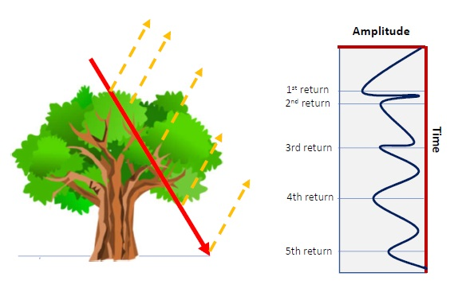
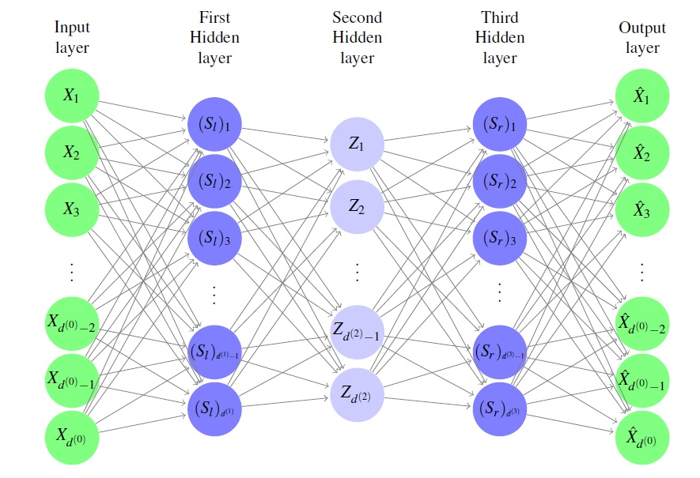
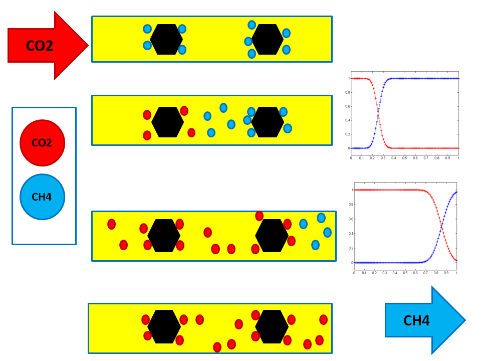

Research
Mathematical frameworks for machine learning; LiDAR/3D point clouds; numerical analysis, PDEs, and functional analysis
My research develops mathematically grounded tools for modern data problems, with a focus on building mathematical frameworks for machine learning. A recurring theme is designing representations and features that are both computationally effective and mathematically interpretable. This includes feature engineering inspired by measure theory and functional analysis, and dimensionality reduction methods (e.g., PCA and autoencoders) for high-dimensional and geometric data such as LiDAR/3D point clouds.
I also work in numerical analysis and partial differential equations (PDEs), including PDE-based models for physical phenomena in porous media and geoscience applications (e.g., methane hydrates and adsorption models).
Before focusing on machine learning and computational research, I worked in functional analysis, with particular emphasis on Banach space theory and Orlicz spaces. This early work played a central role in my decision to pursue a Ph.D. in mathematics. My broad background continues to shape how I approach research: I enjoy connecting ideas across areas—from pure mathematics to computation and real-world data.

Machine learning on LiDAR / 3D point clouds
My work on LiDAR data grew out of research collaborations in data science and geometry-informed learning. A major motivation is that point cloud data are high-dimensional, noisy, and often contain structure at multiple scales. I am interested in improving classification pipelines by combining: (i) mathematically motivated feature engineering, (ii) dimensionality reduction, and (iii) learning models suited to geometric data.One line of work focuses on using learned representations (e.g., autoencoders) together with engineered features to classify points into relevant classes (for example, distinguishing ground versus non-ground points and refining labels based on morphology and local structure). Typical features in LiDAR datasets include spatial coordinates, intensity, number of returns, and (when available) RGB information. Beyond standard feature sets, my goal is to develop descriptors motivated by rigorous mathematical ideas (e.g., measure-theoretic quantities defined on dyadic neighborhood structures) to improve performance and interpretability.

Remote sensing: vegetation classification and climate-related applications
Over the last decade, collaborators in remote sensing and geospatial analysis have collected and analyzed LiDAR point cloud data across different sites using both direct (labor-intensive) and indirect methods. A motivating application is estimating forest structure parameters from LiDAR, including leaf area index (LAI) and related canopy measures. A general approach is to combine engineered features and multi-scale geometric descriptors with dimensionality reduction (linear methods such as PCA and nonlinear methods such as autoencoders), followed by learning models such as feed-forward neural networks or ensemble methods. Automating classification and structural estimation can significantly accelerate analysis pipelines for large-scale forest data.Methane Hydrates and Phase Transitions in Porous Media
My earlier research focused on mathematical models for methane hydrate formation and dissociation in porous media. Methane hydrates are ice-like crystalline structures that form under high-pressure and low-temperature conditions. They are important in geoscience because they are connected both to potential energy resources and to environmental questions involving methane release.
In this work, the evolution of methane hydrate was modeled through nonlinear partial differential equations with phase transitions and solubility constraints. A simplified formulation involves a conservation law coupled to a multivalued graph constraint:
\[ \frac{\partial u}{\partial t} - \Delta v = f, \qquad v \in \alpha(x;u), \qquad u = S v + R(1-S), \]
Here \(v\) represents methane solubility in the liquid phase, \(S\) represents liquid saturation, and \(u\) represents the total methane content. The graph relation \(v \in \alpha(x;u)\) encodes the phase transition between dissolved methane and hydrate formation. This formulation leads naturally to complementarity constraints of the form
\[ v \leq v^*(x), \qquad S \leq 1, \qquad \big(v^*(x)-v\big)(1-S)=0, \]
where \(v^*(x)\) is the maximum methane solubility determined by pressure, temperature, and salinity. The complementarity condition expresses the physical fact that hydrate forms only when methane reaches its solubility limit.
In collaboration with colleagues at Oregon State University, I studied well-posedness, comparison principles, and numerical approximation for this class of models. The analysis combined tools from monotone operator theory, convex analysis, nonlinear PDEs, and numerical analysis. For the numerical solution, the multivalued phase constraint was treated directly using fully implicit schemes and semismooth Newton methods, avoiding regularization of the graph.
This work continues to influence my current interest in porous media, reduced-order modeling, geometric data analysis, and scientific machine learning. In particular, I am interested in how mathematical modeling and data-driven methods can be combined to study complex multiscale systems with evolving geometry and effective physical properties.
